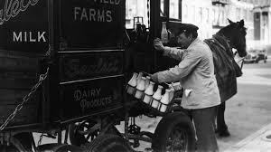

We Deliver to All of NYC!
Milkman on Demand is bringing back the "milk man" to all five boroughs and with all dietary restrictions considered!

Milkman delivering to residents in NYC in the 19th century.

Safety is Very Important to Us
Don't drink regular milk? No problem! We offer and DELIVER a variety of glass-bottled, USDA-certified organic milks such as whole milk, fat-free milk, as well as:oat, almond and soy!